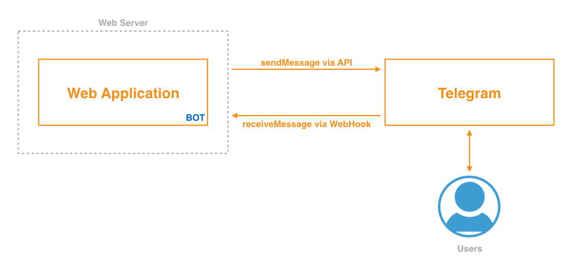

Milano Chatbots Meetup
Salvatore Cordiano
parallelit
Salvatore Cordiano
Full stack Web Developer
«Con il termine bot, abbreviazione di robot, definiamo un programma che opera come agente per un utente o un altro programma e simula un'attività umana»
«Un chatterbot è un programma che tenta di simulare la conversazione di un essere umano»
È un bot Telegram che ripete ciò che gli scriviamo

«Un WebHook è una callback HTTP definita dall'utente. Di solito è scatenata da un evento (es. la ricezione di un messaggio). Quando l'evento accade, la fonte fa una richiesta HTTP alla URI configurata per il webhook»